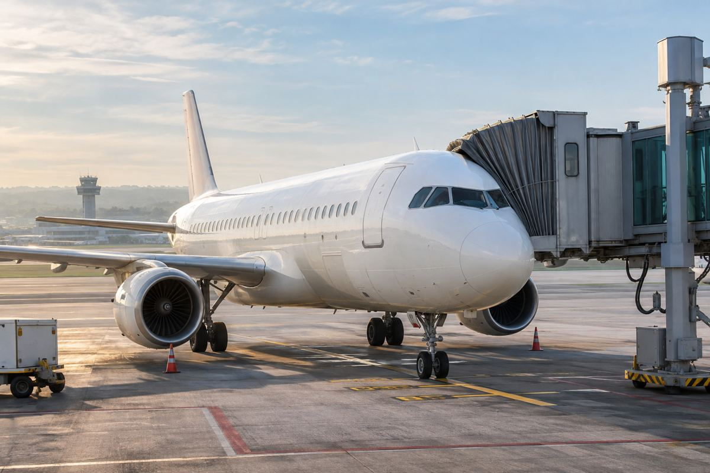

기단·객실 / EXPLAINED
에어프랑스 A220 60호기 인수, 와이파이는 기종보다 개별 기체를 봐야
11월 6일 인수를 발표했다. A220 기단의 85%에 고속 무료 와이파이가 적용됐지만 모든 기체가 같은 상태는 아니다.

에어프랑스가 11월 6일 60번째 에어버스 A220을 인수했다고 발표했다. 기체 이름은 Mimizan이며 첫 여객 운항은 이후 며칠 안에 시작할 예정이라고 안내했다. 같은 발표에서 회사는 운항 중인 A220의 85%가 무료 고속 와이파이를 갖췄고, 아직 설치하지 않은 기체는 2027년 2월까지 개조할 계획이라고 밝혔다. 기체 인수, 첫 여객 운항, 통신 장비 설치는 각각 다른 단계다.
유럽 연결편을 맡는 148석
에어프랑스는 프랑스의 주요 항공사로, A220을 단·중거리 노선에 사용한다. 이번 자료에 제시된 객실은 148석이다. 장거리 항공편으로 파리에 도착한 뒤 유럽 도시로 이동하는 승객도 이런 기재를 접할 수 있다. A220의 도입은 단순히 새 비행기 한 대가 늘어나는 일만이 아니라, 일정에 맞게 노선에 배치하고 정비·승무원 교육까지 준비하는 과정이다. 인수 당일 바로 모든 항공편의 기종이나 객실이 바뀌는 것은 아니다.
좌석은 한 줄에 다섯 개를 놓는 구성이며, 회사는 승객의 80%가 창가 또는 통로 좌석을 이용할 수 있다고 설명했다. 2석과 3석 묶음 가운데 중간 좌석이 한 개라는 구조를 떠올리면 이 비율을 이해하기 쉽다. 다만 이는 좌석 배치의 특징이지 모든 승객에게 원하는 자리를 무료로 보장하는 제도는 아니다. 유아 동반이나 일행끼리 붙어 앉기처럼 목적이 있다면 예약한 운임의 좌석 지정 조건과 실제 남은 자리를 함께 확인해야 한다.
85%는 전체 노선의 보장 수치가 아니다
와이파이 적용률의 분모는 에어프랑스가 설명한 A220 운항 기단이다. 회사 전체 항공기나 모든 유럽 출발편을 뜻하지 않는다. 같은 기종 이름을 보고 예약해도 개별 기체의 장비 상태가 다를 수 있다. 발표는 61번째 이후 도입 A220은 인수 뒤 작업 과정에서 설치하고 첫 여객 운항 전에 준비한다고 안내했다. 이는 신규 도입 절차에 관한 계획이며, 이번 60호기에 특정 날짜의 통신 제공을 별도로 보증하는 설명으로 바꿀 수는 없다.
회사는 A220이 50개 목적지에 투입되고 지금까지 약 2400만명이 이용했다고 밝혔다. 목적지 수는 하루의 운항 편수가 아니고, 누적 이용객은 한 해의 승객 수와도 다르다. 이런 숫자는 기종이 항공사 운항에 자리 잡은 규모를 설명하지만, 내가 탈 편의 정시성이나 인터넷 속도를 알려주지는 않는다. 통신을 업무에 사용할 사람은 해당 항공편의 안내와 이용 조건을 확인하고 필요한 자료를 미리 준비하는 것이 현실적이다. 이 기사는 기내 접속 속도를 독립적으로 측정한 사용기가 아니다.
이번 인수의 의미는 A220 중심의 단·중거리 기단이 커지는 가운데 기존 기체의 서비스도 단계적으로 맞춰가고 있다는 점이다. 이는 공개된 도입과 개조 계획을 함께 읽은 해석이며, 특정 노선의 증편을 확정한 것은 아니다. 앞으로 확인할 것은 Mimizan의 실제 첫 여객 운항과 미설치 기체의 개조 진행이다. 예약 화면의 기종, 좌석표, 출발 전 서비스 안내를 서로 다른 정보로 읽으면 새 기체라는 말만으로 생기는 과도한 기대를 줄이고 자신의 여정에 필요한 조건을 더 정확히 고를 수 있다.